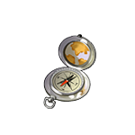

Получено: файл; исходный URL. Без перекодирования; при замене домена идентичность оригиналу не проверена, авторство не установлено. Страница: источник.
Компас
ВКонтакте; данные из ZOMBIA; 28 Июня 2011, 19:45- Тип
- нет данных
- Покупка
- нет данных
- Продажа
- нет данных
- Как получить
- Собрать коллекцию Майя (ВКонтакте, ZOMBIA; требует сверки).
- Применение
- нет данных
- Особенности
- нет данных
- Версия и дата
- ВКонтакте; данные из ZOMBIA; 28 Июня 2011, 19:45
Данные по источнику · ВКонтакте, ZOMBIA · 28 Июня 2011, 19:45; дата редакции не установлена
Предварительно: Данные одной исторической фанатской страницы; цифры и подписи изображений требуют сверки. Описание и условия сохранены по колонкам без додумывания.. Требуется сверка.
- Описание материала
- [изображение: Компас, ЗФ, зомби-ферма,] Компас 5000 Монет 5 Зомбаксов
- Участвует в строительстве
- нет текстовых данных; возможны неподписанные изображения
- Как достать
- Собрать коллекцию Майя
- Участвует в создании
- нет текстовых данных; возможны неподписанные изображения


Данные по источнику · браузерная версия; платформа не указана · дата редакции неизвестна
Предварительно: Подписи и последовательность пиктограмм перенесены без автоматического толкования. Названия, цены и направления стрелок требуют визуальной сверки; возможны ошибки самого сайта.. Требуется сверка.
- Колонка 1 в порядке пиктограмм
- [подпись: Компас; файл kompas.png] [подпись: Стоимость (Зомбаксов); файл zombucks.png] 5 [подпись: Продажа; файл moneta.png] 5000
- Колонка 2 в порядке пиктограмм
- [значок: proizvoditsya.png]
- Колонка 3 в порядке пиктограмм
- [значок: stroit.png] [подпись: Пристань на Остров Майя; файл ostrow_maya.png] [подпись: Слоник; файл slonik.png]
- Колонка 4 в порядке пиктограмм
- [значок: sosdanie.png]
- Колонка 5 в порядке пиктограмм
- [значок: poluchit.png] [подпись: Коллекция Майя; файл maya.png]
Данные по источнику · браузерная Зомби Ферма / Зомби Мания; платформа требует проверки · дата URL не гарантирует дату редакции
Предварительно: Индивидуальная страница прочитана автоматически, подписи значков могут содержать ошибки; даты редакции и независимость от ЗомбиСити не установлены.. Требуется сверка.
- Основной блок страницы и подписи изображений
- Материал [иллюстрация: Компас] Компас Цена покупки: 5 [иллюстрация: Зомбаксы] Цена продажи: 5000 [иллюстрация: Монеты] Продать или купить Компас можно в Обменке Зомби Фермы Символический материал игры Зомби ферма Компас можно получить за обмен Коллекции Майя. Он часто нужен, но раздобыть его не так просто. не стоит продавать Компас, чтобы заработать - он не для этого предназначен. Компас дается за Коллекцию Майя: Майя [иллюстрация: Коллекция Майя] Компас как материал участвует в строительстве некоторых зданий: Батиплан [иллюстрация: Батиплан] Ветряной генератор [иллюстрация: Ветряной генератор] Слоник [иллюстрация: Слоник] Воздушный шар [иллюстрация: Воздушный шар] Врата [иллюстрация: Врата] Колодец в подножье [иллюстрация: Колодец в подножье] Остров Майя [иллюстрация: Остров Майя] Остров Х [иллюстрация: Остров Х] Остров Надежды [иллюстрация: Остров Надежды] Большой шар [иллюстрация: Большой шар] Печка [иллюстрация: Печка] Катапульта [иллюстрация: Катапульта] Назад в пещеры ЗУ [иллюстрация: Назад в пещеры ЗУ] Летающая тарелка [иллюстрация: Летающая тарелка] Флаг Днепра [иллюстрация: Флаг Днепра] Зомби-вертикаль [иллюстрация: Зомби-вертикаль] Ужасный остров [иллюстрация: Ужасный остров] Доступ [иллюстрация: Доступ] Снежный доступ [иллюстрация: Снежный доступ ] Полярная печка [иллюстрация: Полярная печка] Фургон [иллюстрация: Фургон] Таверна [иллюстрация: Таверна] Разрушенный корабль [иллюстрация: Задание Разрушенный корабль в Зомби Ферме] Корабль [иллюстрация: Корабль] Ветряной генератор [иллюстрация: Ветряной генератор] Пристань на Пушистый [иллюстрация: Пристань на Пушистый второй] Парусник в Бразилию [иллюстрация: Парусник в Бразилию] Домой [иллюстрация: Домой] Флаг Аргентины [иллюстрация: Флаг Аргентины] Флаг Мексики [иллюстрация: Флаг Мексики] Дается как награда за выполнение квестовых заданий игры: Разгадка [иллюстрация: Задание Разгадка в Зомби Ферме] Везучий зомби [иллюстрация: Задание Везучий зомби в Зомби Ферме] Дремучий [иллюстрация: Дремучий] Попутчик [иллюстрация: Попутчик] След [иллюстрация: След] Ключники [иллюстрация: Ключники] Крушение [иллюстрация: Крушение] Компас участвует в создании материалов: Цирковой шар [иллюстрация: Цирковой шар] Компас выпадает из ценностей игры Зомби Ферма: Богатырский презент [иллюстрация: Богатырский презент] Смелый презент [иллюстрация: Смелый презент] Скромный презент [иллюстрация: Скромный презент] Компас можно выкрутить в рулетке: Чемпион [иллюстрация: Чемпион] Компас попадается при колдовании Палочками дома: Палочка-выручалочка [иллюстрация: Палочка-выручалочка] [иллюстрация: Стрелка] Котофей > [иллюстрация: Котофей]
Связанные сущности
нет проверенных связей — требуется сверка.